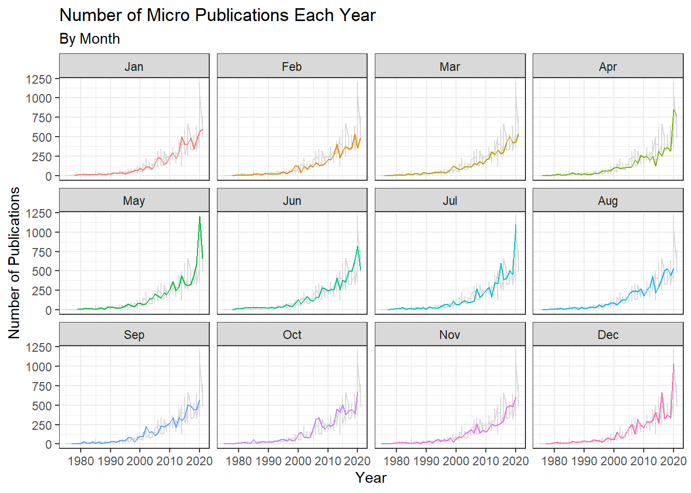

The following exercise is for Module 6 in Dr. Andreas Handel’s MADA Course.
We are participating in week 40 of TidyTuesday! The following analysis uses the TidyTuesday template called by “tidytuesdayR::use_tidytemplate()”.
The following R packages are required to replicate this analysis:
The first step is to download the week 40 data. The tidytuesdayR package hasn’t been updated as of 09/30/2021 to include week 40, so data was downloaded directly from the GitHub repository and loaded into personal repository.
#tidytuesdayR typical code doesn't work
#tt <- tt_load("2021-09-28")
#returns error: Error in tt_check_date.date(x) :
# 2021-09-28 is not a date that has TidyTuesday data.
# Did you mean: 2021-09-21?
#identify location of data in personal repository
data_location_papers <- here::here("data", "tidytuesday", "papers.csv")
data_location_authors <- here::here("data", "tidytuesday", "authors.csv")
data_location_programs <- here::here("data", "tidytuesday", "programs.csv")
data_location_paper_authors <- here::here("data", "tidytuesday", "paper_authors.csv")
data_location_paper_programs <- here::here("data", "tidytuesday", "paper_programs.csv")
#load data
papers <- utils::read.csv(data_location_papers)
authors <- utils::read.csv(data_location_authors)
programs <- utils::read.csv(data_location_programs)
paper_authors <- utils::read.csv(data_location_paper_authors)
paper_programs <- utils::read.csv(data_location_paper_programs)From the readme.md on GitHub, this week’s data comes from the National Bureau of Economic Research NBER by way of the nberwp package by Ben Davies.
The description of the data is as follows: “New research by NBER affiliates, circulated for discussion and comment. The NBER distributes more than 1,200 working papers each year. These papers have not been peer reviewed. Papers issued more than 18 months ago are open access. More recent papers are available without charge to affiliates of subscribing academic institutions, employees of NBER Corporate Associates, government employees in the US, journalists, and residents of low-income countries.”
A more detailed discussion of the data can be found on Ben Davies’ blog.
The data dictionary is described in the readme.md for week 40, but is also replicated below for reference in the analysis.
#create data dictionary dataframe
variable <- c("paper", "catalogue_group", "year", "month", "title", "author", "name", "user_nber", "user_repec", "program", "program_desc", "program_category")
class <- c("character", "character", "integer", "integer", "character", "character", "character", "character", "character", "character", "character", "character")
description <- c("Paper ID", "Catalogue group, either Historical, Technical, or General", "Year", "Month", "Title of the paper", "Author ID", "Author Name", "Author nber ID", "Author repec ID", "Program", "Description of program", "program category")
data_dictionary <- data.frame(variable, class, description)
print(data_dictionary)## variable class
## 1 paper character
## 2 catalogue_group character
## 3 year integer
## 4 month integer
## 5 title character
## 6 author character
## 7 name character
## 8 user_nber character
## 9 user_repec character
## 10 program character
## 11 program_desc character
## 12 program_category character
## description
## 1 Paper ID
## 2 Catalogue group, either Historical, Technical, or General
## 3 Year
## 4 Month
## 5 Title of the paper
## 6 Author ID
## 7 Author Name
## 8 Author nber ID
## 9 Author repec ID
## 10 Program
## 11 Description of program
## 12 program categoryTake an initial look at the format of the data available.
“Papers” data
#data structure
utils::str(papers)## 'data.frame': 29434 obs. of 4 variables:
## $ paper: chr "w0001" "w0002" "w0003" "w0004" ...
## $ year : int 1973 1973 1973 1973 1973 1973 1973 1973 1973 1973 ...
## $ month: int 6 6 6 7 7 7 8 9 9 9 ...
## $ title: chr "Education, Information, and Efficiency" "Hospital Utilization: An Analysis of SMSA Differences in Hospital Admission Rates, Occupancy Rates and Bed Rates" "Error Components Regression Models and Their Applications" "Human Capital Life Cycle of Earnings Models: A Specific Solution and Estimation" ...#data summary
summary(papers)## paper year month title
## Length:29434 Min. :1973 Min. : 1.000 Length:29434
## Class :character 1st Qu.:1999 1st Qu.: 4.000 Class :character
## Mode :character Median :2008 Median : 7.000 Mode :character
## Mean :2006 Mean : 6.534
## 3rd Qu.:2015 3rd Qu.: 9.000
## Max. :2021 Max. :12.000“Authors” data
#data structure
utils::str(authors)## 'data.frame': 15437 obs. of 4 variables:
## $ author : chr "w0001.1" "w0002.1" "w0003.1" "w0004.1" ...
## $ name : chr "Finis Welch" "Barry R Chiswick" "Swarnjit S Arora" "Lee A Lillard" ...
## $ user_nber : chr "finis_welch" "barry_chiswick" "swarnjit_arora" NA ...
## $ user_repec: chr NA "pch425" NA "pli669" ...#data summary
summary(authors)## author name user_nber user_repec
## Length:15437 Length:15437 Length:15437 Length:15437
## Class :character Class :character Class :character Class :character
## Mode :character Mode :character Mode :character Mode :character“Programs” data
#data structure
utils::str(programs)## 'data.frame': 21 obs. of 3 variables:
## $ program : chr "AG" "AP" "CF" "CH" ...
## $ program_desc : chr "Economics of Aging" "Asset Pricing" "Corporate Finance" "Children" ...
## $ program_category: chr "Micro" "Finance" "Finance" "Micro" ...#data summary
summary(programs)## program program_desc program_category
## Length:21 Length:21 Length:21
## Class :character Class :character Class :character
## Mode :character Mode :character Mode :character“Paper_Authors” data
#data structure
utils::str(paper_authors)## 'data.frame': 67090 obs. of 2 variables:
## $ paper : chr "w0001" "w0002" "w0003" "w0004" ...
## $ author: chr "w0001.1" "w0002.1" "w0003.1" "w0004.1" ...#data summary
summary(paper_authors)## paper author
## Length:67090 Length:67090
## Class :character Class :character
## Mode :character Mode :character“Paper_Programs” data
#data structure
utils::str(paper_programs)## 'data.frame': 53996 obs. of 2 variables:
## $ paper : chr "w0074" "w0087" "w0087" "w0107" ...
## $ program: chr "EFG" "IFM" "ITI" "PE" ...#data summary
summary(paper_programs)## paper program
## Length:53996 Length:53996
## Class :character Class :character
## Mode :character Mode :characterIt’s time to clean and wrangle the data! We’ll start with combining the original five datasets into one dataframe. This code was also provided by the TidyTuesday GitHub repository. Then, we can count and summarize the data by program category.
Consolidate data
#create joined dataframe
joined_df <- dplyr::left_join(papers, paper_authors) %>%
dplyr::left_join(authors) %>%
dplyr::left_join(paper_programs) %>%
dplyr::left_join(programs) %>%
dplyr::mutate(
catalogue_group = stringr::str_sub(paper, 1, 1),
catalogue_group = dplyr::case_when(
catalogue_group == "h" ~ "Historical",
catalogue_group == "t" ~ "Technical",
catalogue_group == "w" ~ "General",
),
.after = paper
)## Joining, by = "paper"## Joining, by = "author"## Joining, by = "paper"## Joining, by = "program"#structure of joined dataframe
utils::str(joined_df)## 'data.frame': 130081 obs. of 12 variables:
## $ paper : chr "w0001" "w0002" "w0003" "w0004" ...
## $ catalogue_group : chr "General" "General" "General" "General" ...
## $ year : int 1973 1973 1973 1973 1973 1973 1973 1973 1973 1973 ...
## $ month : int 6 6 6 7 7 7 8 9 9 9 ...
## $ title : chr "Education, Information, and Efficiency" "Hospital Utilization: An Analysis of SMSA Differences in Hospital Admission Rates, Occupancy Rates and Bed Rates" "Error Components Regression Models and Their Applications" "Human Capital Life Cycle of Earnings Models: A Specific Solution and Estimation" ...
## $ author : chr "w0001.1" "w0002.1" "w0003.1" "w0004.1" ...
## $ name : chr "Finis Welch" "Barry R Chiswick" "Swarnjit S Arora" "Lee A Lillard" ...
## $ user_nber : chr "finis_welch" "barry_chiswick" "swarnjit_arora" NA ...
## $ user_repec : chr NA "pch425" NA "pli669" ...
## $ program : chr NA NA NA NA ...
## $ program_desc : chr NA NA NA NA ...
## $ program_category: chr NA NA NA NA ...Create Program Subsets and Count Dataframes
#calculate counts of publications by program category
program_counts <- joined_df %>%
dplyr::count(program_category)
#calculate counts of publications per year by program category
yearly_counts <- joined_df %>%
dplyr::count(year, program_category)
#subset of papers with no program category
nocat <- joined_df[ which(is.na(joined_df$program_category)), ]
#calculate counts of publications per month and year for papers with no category
nocat_counts <- nocat %>%
dplyr::count(year, month)
#subset of micro programs
micro <- joined_df[ which(joined_df$program_category == "Micro"), ]
#calculate counts of publications per month and year for micro programs
micro_counts <- micro %>%
dplyr::count(year, month)
#subset of finance programs
finance <- joined_df[ which(joined_df$program_category == "Finance"), ]
#calculate counts of publications per month and year for finance programs
finance_counts <- finance %>%
dplyr::count(year, month)
#subset of macro / international programs
macro <- joined_df[ which(joined_df$program_category == "Macro/International"), ]
#calculate counts of publications per month and year for macro / internationla programs
macro_counts <- macro %>%
dplyr::count(year, month)Focusing on the program categories, how does the frequency of publications change over time? Are there any trends associated with month of publication?
Publications By Program Category
#table to examine publications by program category
program_counts %>%
kable(
format.args = list(big.mark = ","),
col.names = c("Program Category", "Numer of Publications"),
align=rep('c', 2)
) %>%
kable_styling(latex_options = c("striped", "hold_position"))| Program Category | Numer of Publications |
|---|---|
| Finance | 12,957 |
| Macro/International | 35,929 |
| Micro | 79,679 |
| NA | 1,516 |
#graph to examine publications per year by program category
ggplot2::ggplot(data = yearly_counts, aes(x = year, y = n, color = program_category)) +
geom_line() +
labs( x = "Year", y = "Number of Publications",
title ="Number of Publications Per Year",
subtitle = "By Program Category",
color = "Program Category") +
scale_y_continuous(label = comma, expand = c(0, 0), limits = c(0, NA)) +
scale_x_continuous(breaks = seq(1970, 2021, by = 10)) +
theme(
panel.grid.minor.x = element_blank(),
panel.grid.minor.y = element_blank(),
axis.line = element_line(color="#5b5e5f", size = 0.5),
axis.ticks.length = unit(0.25, "cm"),
axis.ticks = element_line(colour = "#5b5e5f"))Finance Publications Each Year By Month
#for finance program, facet wrap by month
ggplot2::ggplot(data = finance_counts, aes(x = year, y = n, color = factor(month))) +
geom_line(data = transform(finance_counts, month = NULL), color = "grey85") +
geom_line(show.legend = FALSE) +
facet_wrap(~ month,
labeller = as_labeller(c (
"1" = "Jan",
"2" = "Feb",
"3" = "Mar",
"4" = "Apr",
"5" = "May",
"6" = "Jun",
"7" ="Jul",
"8" = "Aug",
"9" = "Sep",
"10" = "Oct",
"11" = "Nov",
"12" = "Dec"))) +
theme_bw() +
labs( x = "Year", y = "Number of Publications",
title ="Number of Finance Publications Each Year",
subtitle = "By Month")Micro Publications Each Year By Month
#for micro program, facet wrap by month
ggplot2::ggplot(data = micro_counts, aes(x = year, y = n, color = factor(month))) +
geom_line(data = transform(micro_counts, month = NULL), color = "grey85") +
geom_line(show.legend = FALSE) +
facet_wrap(~ month,
labeller = as_labeller(c (
"1" = "Jan",
"2" = "Feb",
"3" = "Mar",
"4" = "Apr",
"5" = "May",
"6" = "Jun",
"7" ="Jul",
"8" = "Aug",
"9" = "Sep",
"10" = "Oct",
"11" = "Nov",
"12" = "Dec"))) +
theme_bw() +
labs( x = "Year", y = "Number of Publications",
title ="Number of Micro Publications Each Year",
subtitle = "By Month")
Macro/International Publications Each Year By Month
#for macro/international program, facet wrap by month
ggplot2::ggplot(data = macro_counts, aes(x = year, y = n, color = factor(month))) +
geom_line(data = transform(macro_counts, month = NULL), color = "grey85") +
geom_line(show.legend = FALSE) +
facet_wrap(~ month,
labeller = as_labeller(c (
"1" = "Jan",
"2" = "Feb",
"3" = "Mar",
"4" = "Apr",
"5" = "May",
"6" = "Jun",
"7" ="Jul",
"8" = "Aug",
"9" = "Sep",
"10" = "Oct",
"11" = "Nov",
"12" = "Dec"))) +
theme_bw() +
labs( x = "Year", y = "Number of Publications",
title ="Number of Macro/International Publications Each Year",
subtitle = "By Month")Publications with No Program Category Each Year By Month
#for no program category, facet wrap by month
ggplot2::ggplot(data = nocat_counts, aes(x = year, y = n, color = factor(month))) +
geom_line(data = transform(nocat_counts, month = NULL), color = "grey85") +
geom_line(show.legend = FALSE) +
facet_wrap(~ month,
labeller = as_labeller(c (
"1" = "Jan",
"2" = "Feb",
"3" = "Mar",
"4" = "Apr",
"5" = "May",
"6" = "Jun",
"7" ="Jul",
"8" = "Aug",
"9" = "Sep",
"10" = "Oct",
"11" = "Nov",
"12" = "Dec"))) +
theme_bw() +
labs( x = "Year", y = "Number of Publications",
title ="Number of Publications With No Category Each Year",
subtitle = "By Month")